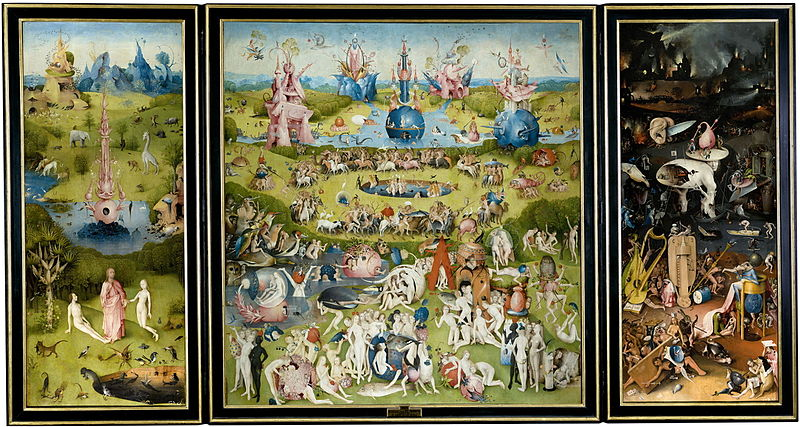
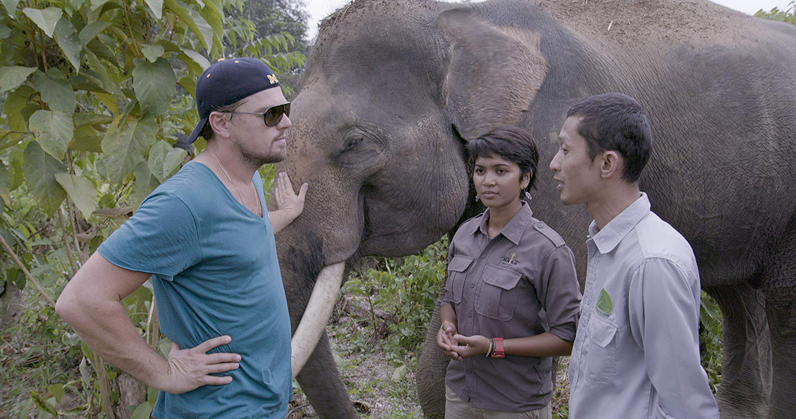
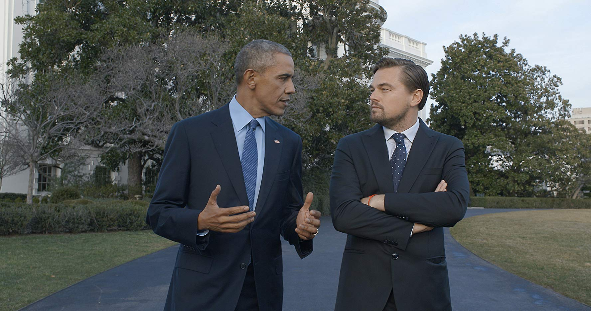
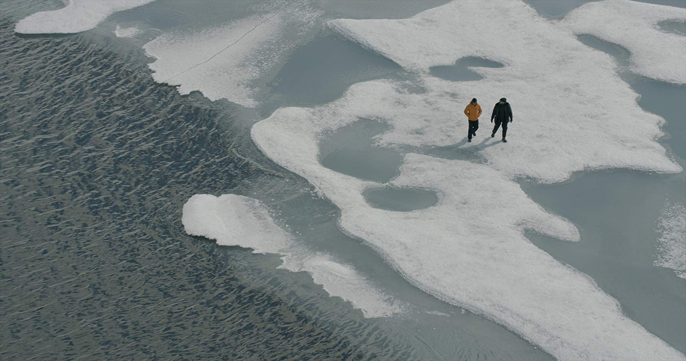

PRIMERA IMPRESION
DiCaprio entrevista a individuos de todos los sectores de la sociedad, tanto en países desarrollados como en naciones en vías de desarrollo, que con vehemencia y pragmatismo brindan opiniones sobre lo que se debe hacer hoy y en el futuro; para poder lograr una transición de los sistemas económicos y políticos hacia instituciones favorables al medio ambiente.
En octubre de 2016, Leonardo DiCaprio, Mensajero de las Naciones Unidas para la Paz por sus trabajos en pro de la ecología y la biodiversidad, presentó un documental realizado por Fisher Stevens, Before the Flood (titulado en el mundo hispánico Antes de que sea tarde ). Él es coproductor y actor principal, y entrevista a personajes como Obama y el papa Francisco, entre otros. Es un alegato sobre la imperiosa necesidad de sustituir en un tiempo mínimo (más de diez años será ya un desastre) el uso de combustibles fósiles (entre los que se incluyen carbón, petróleo y derivados) por fuentes alternativas de energía, como la solar y la eólica. En un viaje de tres años por China, Indonesia, el Ártico y muchos otros rincones del mundo, testimonia los desastres medioambientales que parecen augurios de un apocalipsis climático si no se hace un movimiento de timón que cambie el rumbo que llevamos drásticamente.

Leonardo DiCaprio explica cómo en su infancia tenía junto a la cama El Jardín de las delicias , del Bosco, del que aparecen escenas de gran belleza, enlazándolo con el mensaje de esta película.
Dicho cuadro trata de la Creación e historia del mundo en la versión bíblica, con tres paneles, siendo el primero la escena del Paraíso y la áurea inocencia; el segundo, el mundo, con sus pecados y tentaciones, grotesca y oníricamente expresados; y el tercero, el Infierno, con sus castigos. Las proporciones en la tabla pintada son las habituales: el Mundo es la suma de la medida de la Inocencia y el Castigo, curiosa metáfora métrica. Si fuera un hindú quien lo observase, diría que representan los tres poderes divinos: Brahma, el Creador; Vishnu, el Conservador de la existencia, sometiendo a prueba, para su aprendizaje, a todo lo que vive y ama; y Shiva, la destrucción, asignando el peso de los efectos a las causas, y purificando y regenerando a través del sufrimiento.
En la escena del Paraíso, Dios aparece como Cristo junto a Adán despertando de su sueño y Eva; también vemos la Fuente de la Vida y animales, plantas, y criaturas acuáticas viviendo en armonía. Detrás de ellos aparece el drago, árbol distintivo de las Canarias, curioso no solo por su forma casi perfecta de pirámide invertida, sino también por su savia roja –la sangre del dragón , muy usada en la medicina antigua–, por lo extremadamente lento que crece y porque carece de anillos al ser cortado, por lo que no puede determinarse de este modo su edad.

DESOLACION Y ARMONIA
En la escena del Infierno, las máquinas del castigo son instrumentos musicales. Paradójica alegoría: es la armonía quebrada la que nos hiere, pura filosofía hindú donde se enseña que el karma, la reacción que ajusta la Ley, es necesaria para el retorno de la armonía, que en los planos más elevados de conciencia se identifica con la Justicia misma. O quizás también significa que la maldición del alma-armonía es, precisamente, no haber hecho uso de la misma.
En la tabla del Infierno o Destrucción, se ve, en la noche, una ciudad en ruinas, incendiada, con nubes de vapor y hollín sobre un fondo negro, donde la angustia y la desolación reinan. Una escena pavorosa pintada por el Bosco con precisa y delicada maestría.
En el documental, Gregory Mankiw, catedrático de Economía en Harvard y presidente del Congreso de Asesoría Económica durante el gobierno de Bush hijo, propone un impuesto sobre el carbono, que grave toda actividad que emita carbono a la atmósfera. Dice: Cuando creas un impuesto, aumentas el valor de las cosas y la gente consumirá menos.

No creo que en un sistema complejo la cosa sea tan sencilla, pero lo que sí es cierto es que las actividades lucrativas de algunos están suponiendo la desolación futura de casi todos. En economía se habla de costes marginales, los que soporta la sociedad con la acción empresarial de unos pocos beneficiados. En este caso, el coste marginal es insufrible; estamos hablando de medidas de emergencia.
En el mismo documental se cuenta cómo un número suficiente de senadores han sido comprados –dice incluso los nombres– por la industria petrolífera para vetar toda ley medioambiental que dificulte sus intereses mezquinos contra el progreso y contra la supervivencia del género humano. Como vemos en varias escenas, una presión social muy fuerte obligaría a los jefes de Estado a incorporar este impuesto del carbono. Y deberían hacerlo ipso facto ; no sabemos si el proceso es irreversible, pero sí que puede serlo en cualquier momento.
COMBUSTIBLES FOSILES
Hasta los egipcios conocían la existencia del petróleo y lo usaron ocasionalmente, pero era un producto tan asqueroso y generaba tanto humo que no lo promovieron.
Los yacimientos de carbón (que aún impulsan gran parte de la economía mundial) son las masas de bosques arrasadas y petrificadas en catástrofes geológicas naturales. Los de petróleo son semejantes, pero con masa no solo vegetal, sino también animal, en estado oleaginoso de descomposición. Todos estos detritos, que deberían quedar en el interior de la Tierra para continuar su proceso de depuración y transformación que los convierta de nuevo en rocas magmáticas o metamórficas, después de usarlos energéticamente, los lanzamos a la atmósfera, donde quedan en suspensión coloidal o directamente como gases.
Este carbón, que debería ser el soporte de la vida, se convierte en una sustancia peligrosa, que perturba el equilibrio natural de la Tierra. Perdone el lector la comparación, pero dada la gravedad del tema, creo que es necesaria. Imaginemos que todo el desecho de la combustión de los alimentos, acumulado después de la digestión en el intestino grueso y que debería fertilizar la tierra, o sea, las heces fecales, fueran lanzadas, pulverizadas, a la atmósfera que respiramos todos los días. El proceso es semejante y venenoso para la salud del hombre y de la Tierra.
La industria petrolífera ha sido durante más de un siglo dueña del mundo: fuerza políticas insanas, corrompe Gobiernos, crea guerras y revoluciones, promueve injusticias y ni siquiera permite a los países beneficiarse de sus depósitos energéticos, pues mantiene en el poder a tiranos que usan una riqueza del país para depravar sus almas con el lujo sin mesura y la injusticia, aplastando brutalmente las cabezas de sus súbditos.

Infinidad de cadáveres yacen, despedazados, en la gruta de este dragón enemigo de la humanidad, que es la industria del petróleo, y ahora, quiere terminar su labor desolando la Tierra entera, sin ningún San Jorge que clave su espada en su corazón de hulla o antracita no convertida en diamante.
El problema siempre es el egoísmo brutal de los deshumanizados, la codicia, que, como dijeron los egipcios, es una enfermedad incurable, un pozo de petróleo que se traga el alma colapsándola en su oleaginosa suciedad.
Si el petróleo está envenenando el planeta, no es por culpa de ser la sustancia que es, pues forma parte de la naturaleza; lo está envenenando por lo que hacemos con él, por cómo paraliza otras iniciativas luminosas y por cómo se resiste a ser sustituido, aun a precio de convertirse en destrucción física y moral de miles de millones de seres humanos, que por serlo, sueñan un futuro mejor, más digno. Igual que toda alma que no se haya convertido en un cáncer para sí misma sueña una Tierra descontaminada y limpia, donde todos sus hijos seamos como hermanos, hijos de una misma Madre.